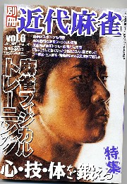

書壇56で紹介した「別冊近代麻雀」、なんと今月号で休刊になってしまった....創刊号から数えて６号目。これが最終号となった今月号。

３号雑誌という言葉がある。創刊号から３号まで刊行したところで休刊になる雑誌を云う。どうして３号かといえば、３号までは執筆者に対する原稿料や印刷代を払わなくても良いからだそうだ。そこで３号までの雑誌の売り上げで、印刷代や原稿料を払って４号以降を継続するという手法が取られるという。
しかし３号までの売り上げが思わしくないと、それまでの印刷代や原稿料が払えない。そこで４号以降は刊行できないことになる。それでベンチャー的な雑誌は、３号雑誌になってしまうことが多いということらしい。
しかし「別冊近代麻雀」は竹書房、一発旗揚げのベンチャー会社ではない。とうぜん印刷代や原稿料の問題ではないだろう。
いずれにしても仕方がないが、別冊近代麻雀には連載小説が３本もある。待望の平成麻雀小説と銘打った「卑屈王」はけっこう面白かったのに。未完成のまま単行本にも収録されなかった幻の名作という阿佐田哲也の「雀師流転」、未完成の作品が未完成なりの最終章まで掲載されないまま、終わってしまうのかな。
休刊の理由は風の便りでいろいろ聞くが、要は売れ行きがすべてと言うことなんだろう。大変面白いと思っていたので、非常に残念だ。
|